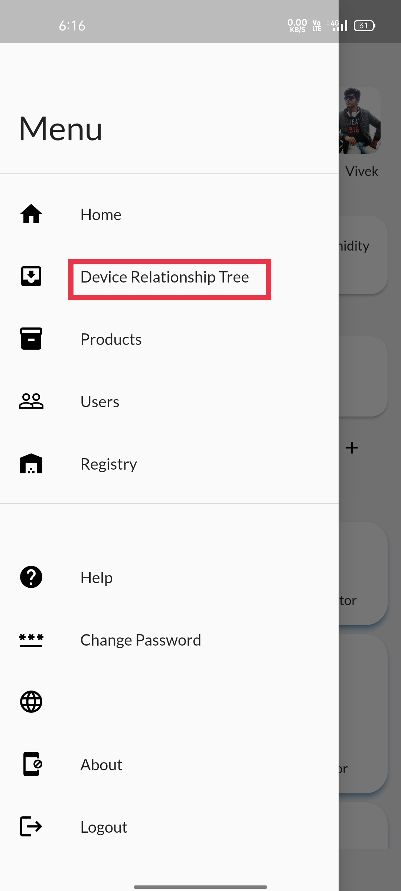
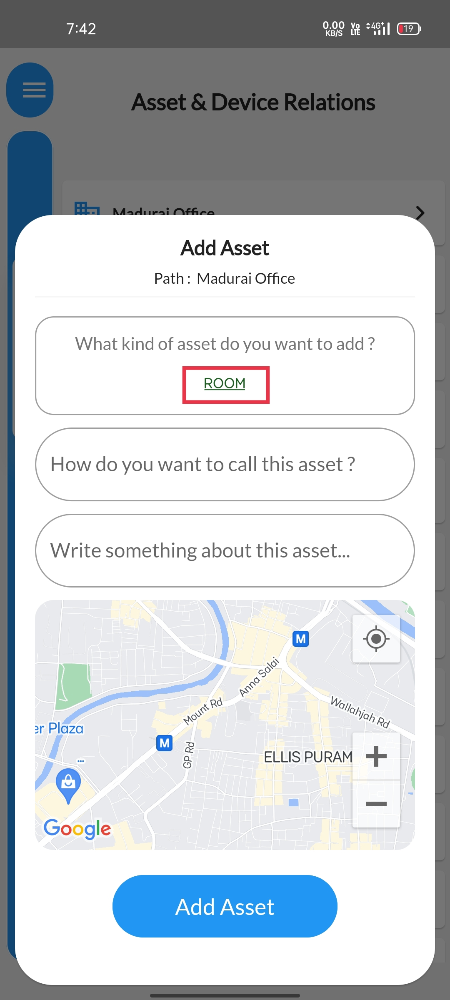

STEP 1To view the Device-relation Tree, Click on the Dashboard |
 |
STEP 2Select the Device-Relation Tree option available. |
 |
STEP 3Assets Corresponding to your location will be displayedAlong with the devices included in the asset. |
 |
STEP 4Long press the Asset that you want to modify, a pop-up will appear.Select the Add asset option. |
 |
STEP 5Another pop-up will be displayed. Select the Room option available in the first tab. |
|  |
STEP 6
Click on the corresponding asset type to utilise. |
 |
STEP 7Give a desired name & description to that new asset. |
 |
STEP 8You can pin point your assets location for reference purposes if you wish.Else proceed to click on the add asset button available below the map. |
 |
STEP 9Atlast a Confirmation message will be displayed informing that Asset is added sucessfully. |
 |